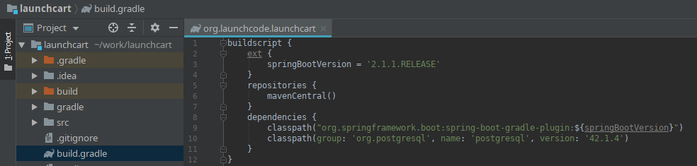

Configuration: Spring & Elasticsearch
One of the many benefits of Spring is that it contains a vast amount of tools we can leverage while building our web applications. One of these tools is Spring Data JPA. Spring Data JPA has some code that will connect to our datastore, and perform basic operations by using methods attached to the JPA Repository.
JPA Repositories make it very easy for us to work with various data stores including SQL data stores like Postgres, and NoSQL data stores like ElasticSearch.
To get our web application to work with JPA Repository we need to do a couple of things.
- Check versions of Elasticsearch, Springboot, and gradle
- Include Spring Data in our dependencies (this class uses the build.gradle file to manage our dependencies)
- Configure our Elasticsearch connection information in our application.properties file
- Create & configure EsConfig.java file
- Create & Map Java classes to Elasticsearch Documents
- Extend the JPA Repository interface
Forward
The version of Spring Data (2.X.X) we use in this class only supports communicating with Elasticsearch using the transport client via port 9300. The current major version of Elasticsearch (6.X.X) supports both the transport client, and a newer REST client. The REST client is the preferred method for communicating with Elasticsearch, but the transport client will continue to be supported in Elasticserach version 7. However, there are plans to remove the transport client in Elasticsearch version 8.
The REST client isn’t yet supported by Spring Data, and various workarounds exist to allow you to use the REST client within Spring Data they go deeper into Spring Data than the intended objectives of this class.
For this configuration, and throughout this class we will work with the transport client within Spring Data. And we will be using Elasticsearch version 6.5.4. However, both the version of Spring Data, and Elasticsearch are subject to change in the future.
Elasticsearch, Springboot & Gradle Versions
Let’s make sure we are using compatibale versions of Elasticsearch, Springboot, and Gradle.
Elasticsearch
We can check our version of Elasticsearch by running $ curl -XGET 127.0.0.1:9200.
We are looking for the "number" to be “6.5.4”.
If you don’t have that version of Elasticsearch, or you don’t have a docker container for Elasticsearch checkout the Installation: Docker Elasticsearch article.
You will also need to take note of "cluster_name". Spring data will need the cluster name later. The default is "cluster_name": "elasticsearch", but yours may be named something else.
Springboot
We can check our version of Springboot by looking into our projects build.gradle file.

From this file we can see the spring boot version of this project is 2.1.1. That’s what we want!
Gradle
We will need to use Gradle version 4.4. We can check the Gradle version by checking out our /gradle/wrapper/gradle-wrapper.properties file.

From this file we can see the gradle version for this project is 4.4. That’s what we want!
Update build.gradle
Going back to our build.gradle file we need to add a plugin apply plugin: 'io.spring.dependency.management'.

If you have a bootRun{} section towards the bottom of your file delete it. That’s a holdover from an older version of gradle.
Note
You may not have done much up to this point, since we have been using these versions so far throughout this class. However, it’s a good idea to check the versions of the software you use. You will need to know which versions work together, and you are responsible for knowing about security vulnerabilties in specific versions of the software you use in your projects!
Let’s add the dependencies Spring data will need to work with Elasticsearch.
We will be adding compile('org.springframework.data:spring-data-elasticsearch:3.1.3.RELEASE') and compile('net.java.dev.jna:jna') to the dependency section of our build.gradle file.

Update application.properties
Now that we have the correct versions of Elasticsearch, Springdata, and Gradle we need to configure Springdata so that it knows where, and how to communicate with Elasticsearch.
We have used application.properties to configure various aspects of our project, and this is also where the variables of our configuration will live for Elasticsearch.
We will be setting the Elasticsearch transport client port, the Elasticsearch cluster URL, the Elasticsearch cluster’s index name.
Add the following code snippet to the bottom of your application.properties file.
application.properties
# Elasticsearch Config
spring.data.elasticsearch.cluster-nodes=127.0.0.1:9300
es.index-name=launchcart
You will also want to add this to your application-test.properties file.
application-test.properties
# Elasticsearch Config
spring.data.elasticsearch.cluster-nodes=127.0.0.1:9300
es.index-name=launchcart
Hint
It would be a good idea to use environment variables for your Elasticsearch information. So that your elasticsearch information won’t be posted to Gitlab, and to make this project easier to deploy in the future. You can use environment variables by using tokens that look like this: ${ES_CLUSTER_URL}:${ES_CLUSTER_PORT}. You would then need to add the environment variable to your runtime configuration.
Note
Based on the versions of PSQL, and Spring data you are using you may get a mysterious error when running your project for the first time. The error message will stop your application from running, and will mention something about Clob, or ClobContext issues. If you run into this issue, you need to add spring.jpa.properties.hibernate.jdbc.lob.non_contextual_creation=true to your application.properties, and application-test.properties files.
EsConfig.java
Create a new file at the root of your project called EsConfig.java.

Now we will want to add some code to this file.
//imports
...
@Component
public class EsConfig {
@Value("${es.index-name}")
private String indexName;
public String getIndexName() {
return indexName;
}
public void setIndexName(String indexName) {
this.indexName = indexName;
}
}
The @Value annotation tells Spring to read the es.index-name property from the properties file and store it in the field indexName.
The @Component annotation tells Spring that this class is a bean that it should create and manage. The end result of setting up this class is that we can use Spring’s Expression Language to dynamically insert the value of the indexName field in our code with the syntax #{esConfig.indexName}.
Conclusion
We have configured our Spring project to work with Elasticsearch. Moving forward from here will be different for each project. You will more than likely need to create Document models, Document Elasticsearch Repositories, Controllers, and possibly a Utilty file to reindex your Elasticsearch index.
See the Walkthrough: Elasticsearch in Spring to see an example of how to use Elasticsearch within a Spring project.